NCERT Solutions for Class 11 Physics Chapter 9 Mechanical Properties of Solids are part of Class 11 Physics NCERT Solutions. Here we have given NCERT Solutions for Class 11 Physics Chapter 9 Mechanical Properties of Solids.
NCERT Solutions for Class 11 Physics Chapter 9 Mechanical Properties of Solids
Topics and Subtopics in NCERT Solutions for Class 11 Physics Chapter 9 Mechanical Properties Of Solids:
| Section Name | Topic Name |
| 9 | Mechanical Properties Of Solids |
| 9.1 | Introduction |
| 9.2 | Elastic behaviour of solids |
| 9.3 | Stress and strain |
| 9.4 | Hooke’s law |
| 9.5 | Stress-strain curve |
| 9.6 | Elastic moduli |
| 9.7 | Applications of elastic behaviour of materials |
NCERT Solutions Class 11 PhysicsPhysics Sample Papers
QUESTIONS FROM TEXTBOOK
Question 9. 1. A steel wire of length 4.7 m and cross-sectional area 3.0 x 10-5 m2 stretches by the same amount as a copper wire of length 3.5 m and cross-sectional area of 4.0 x 10-5 m2 under a given load. What is the ratio of the Young’s modulus of steel to that of copper?
Answer:
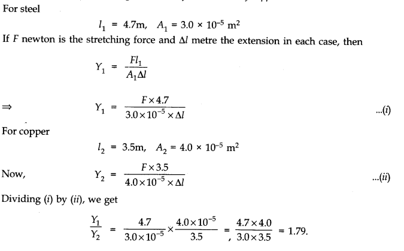
Question 9. 2. Figure shows the strain-stress curve for a given material. What are (a) Young’s modulus and (b) approximate yield strength for this material?
Answer:
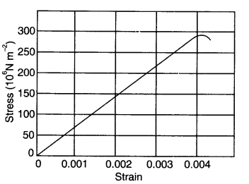
(a) Young’s modulus of the material (Y) is given by
Y =Stress/Strain
=150 x 106/0.002
150 x 106/2 x 10-3
=75 x 109 Nm-2
=75 x 1010 Nm-2
(a)Yield strength of a material is defined as the maximum stress it can sustain. From graph, the approximate yield strength of the given material
= 300 x 106 Nm-2
= 3 x 108 Nm-2 .
More Resources for CBSE Class 11
- NCERT Solutions
- NCERT Solutions Class 11 Maths
- NCERT Solutions Class 11 Physics
- NCERT Solutions Class 11 Chemistry
- NCERT Solutions Class 11 Biology
- NCERT Solutions Class 11 Hindi
- NCERT Solutions Class 11 English
- NCERT Solutions Class 11 Business Studies
- NCERT Solutions Class 11 Accountancy
- NCERT Solutions Class 11 Psychology
- NCERT Solutions Class 11 Entrepreneurship
- NCERT Solutions Class 11 Indian Economic Development
- NCERT Solutions Class 11 Computer Science
Question 9. 3. The stress-strain graphs for materials A and B are shown in figure.
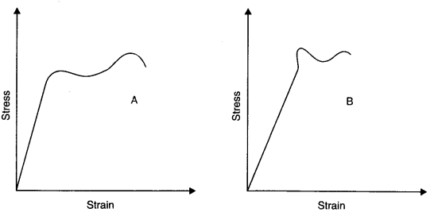
The graphs are drawn to the same scale.
(a) Which of the materials has the greater Young’s modulus?
(b) Which of the two is the stronger material?
Answer: (a) From the two graphs we note that for a given strain, stress for A is more than that of B. Hence Young’s modulus =(Stress /Strain) is greater for A than that of B.
(b) Strength of a material is determined by the amount of stress required to cause fracture. This stress corresponds to the point of fracture. The stress corresponding to the point of fracture in A is more than for B. So, material A is stronger than material B.
Question 9. 4. Read the ‘allowing two statements below carefully and state, with reasons, if it is true or false.
(a) The Young’s modulus of rubber is greater than that of steel;
(b) The stretching of a coil is determined by its shear modulus.
Answer: (a) False. The-Young’s modulus is defined as the ratio of stress to the strain within elastic limit. For a given stretching force elongation is more in rubber and quite less in steel. Hence, rubber is less elastic than steel.
(b) True. Stretching of a coil is determined by its shear modulus. When equal and opposite forces are applied at opposite ends of a coil, the distance, as well as shape of helicals of the coil change and it, involves shear modulus.
Question 9. 5. Two wires of diameter 0.25 cm, one made of steel and other made of brass are loaded as shown in figure. The unloaded length of steel wire is 1.5 m and that of brass wire is 1.0 m.Young’s modulus of steel is 2.0 x 1011 Pa. Compute the elongations of steel and brass wires. (1 Pa = 1 N m2).
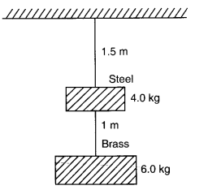
Answer:
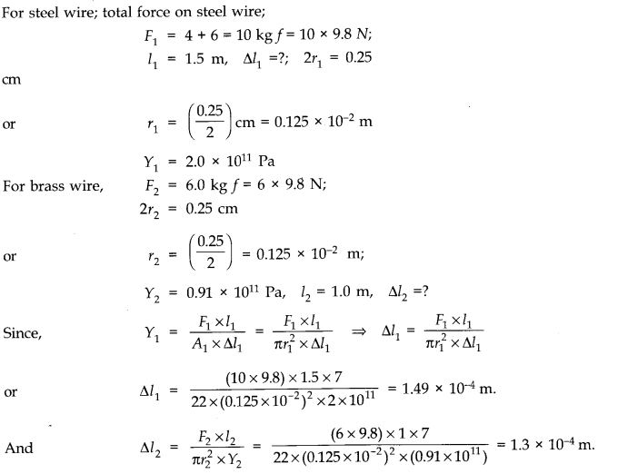
Question 9. 6. The edge of an aluminium cube is 10 cm long. One face of the cube is firmly fixed to a vertical wall. A mass of 100 kg is then attached to the opposite face of the cube. The shear modulus of aluminium is 25 GPa. What is the vertical deflection of this face?
Answer: Here, side of cube, L = 10 cm =10/100= 0.1 m
.•. Area of each face, A = (0.1)2 = 0.01 m2
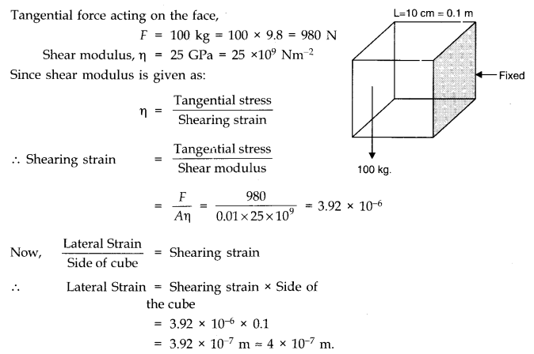
Question 9. 7. Four identical hollow cylindrical columns of mild steel support a big structure of mass 50,000 kg. The inner and outer radii of each column are 30 cm and 60 cm respectively. Assuming the load distribution to be uniform, calculate the compressional strain of each column. Young’s modulus, Y = 2.0 x 1011 Pa.
Answer:

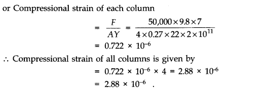
Question 9. 8. A piece of copper having a rectangular cross-section of 15.2 mm x 19.1 mm is pulled in tension with 44,500 N force, producing only elastic deformation. Calculate the resulting strain? Shear modulus of elasticity of copper is 42 x 109 N/m2.
Answer:
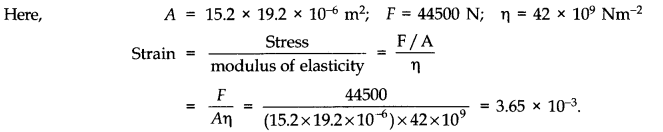
Question 9. 9. A steel cable with a radius of 1.5 cm supports a chairlift at a ski area. If the maximum stress is not to exceed 108 Nm-2 what is the maximum load the cable can support ?
Answer:
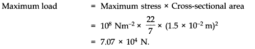
Question 9. 10. A rigid bar of mass 15 kg is supported symmetrically by three wires each 2.0 m long. Those at each end are of copper and the middle one is of iron. Determine the ratios of their diameters if each is to have the same tension.
Answer: Since each wire is to have same tension therefore, each wire has same extension. Moreover, each wire has the same initial length.So, strain is same for each wire.
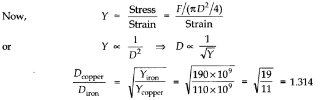
Question 9. 11. A 14.5 kg mass, fastened to the end of a steel wire of unstretched length 1 m, is whirled in a vertical circle with an angular velocity of 2 rero./s at the bottom of the circle. The cross-sectional area of the wire is 0.065 cm2. Calculate the elongation of the zvire when the mass is at the lowest point of its path. Ysteel = 2 x 1011 Nm-2.
Ans.Here, m = 14.5 kg; l = r = 1 m; v = 2 rps; A = 0.065 x 10-4 m2 Total pulling force on mass, when it is at the lowest position of the vertical circle is F = mg + mr w2 = mg + mr 4,π2 v2
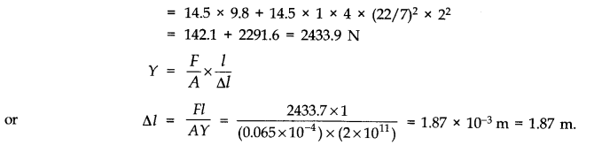
9.12.Compute the bulk modulus of water from the following data: Initial volume = 100.0 litre, Pressure increase = 100.0 atm (1 atm = 1.013 x 105 Pa), Final volume = 100.5 litre. Compare the bulk modulus of water with that of air (at constant temperature). Explain in simple terms why the ratio is so large.
Answer:
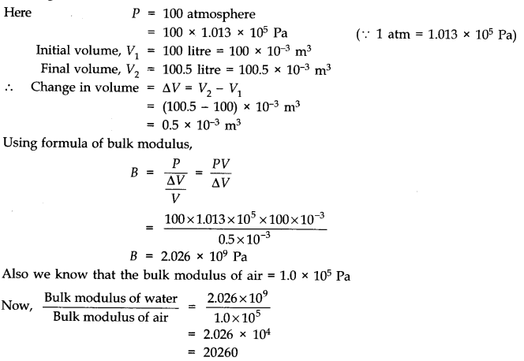
The ratio is too large. This is due to the fact that the strain for air is much larger than for water at the same temperature. In other words, the intermolecular distances in case of liquids are very small as compared to the corresponding distances in the case of gases. Hence there are larger interatomic forces in liquids than in gases.
Question 9. 13. What is the density of water at a depth where pressure is 80.0 atm, given that its density at the surface is 1.03 x 103 kg m-3?
Answer:
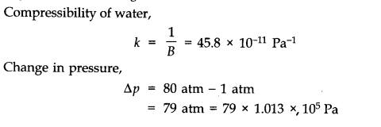
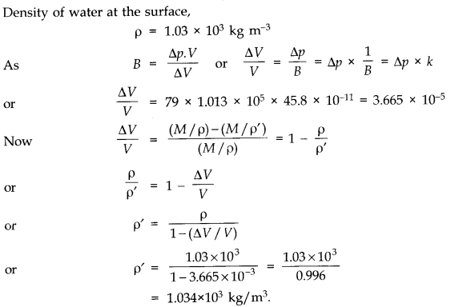
Question 9. 14. Compute the fractional change in volume of a glass slab, when subjected to a hydraulic pressure of 10 atm.
Answer:
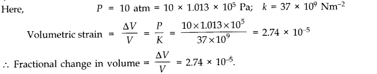
Question 9. 15. Determine the volume contraction of a solid copper cube, 10 cm on an edge, when subjected to a hydraulic pressure of 7.0 x 106 Pa.
Answer: Here a side of copper cube a = 10 cm, hence volume V = a3 = 10-3 m3 , hydraulic pressure applied p = 7.0 x 106 Pa and from table we find that bulk modulus of copper B = 140 G Pa = 140 x 109 Pa.
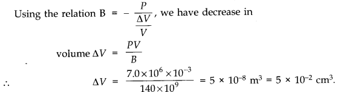
Question 9. 16. How much should be pressure the a litre of water be changed to compress it by 0.10 %? Bulk modulus of elasticity of water = 2.2 x 109 Nm-2.
Answer:
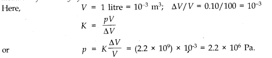
Question 9. 17. Anvils made of single crystals of diamond, with the shape as shown in figure are used to investigate behaviour of materials under very high pressures. Flat faces at the narrow end of the anvil have a diameter of 0.50 mm, and the wide ends are subjected to a compressional force of50,000 N. What is the pressure at the tip of the anvil?
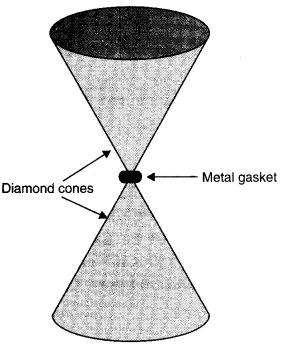
Answer:
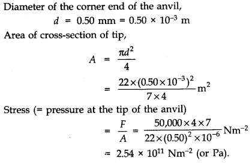
Question 9. 18. A rod of length 1.05 m having negligible mass is supported at its ends by two wires of steel (wire A ) and aluminium (wire B) of equal lengths as shown in figure.
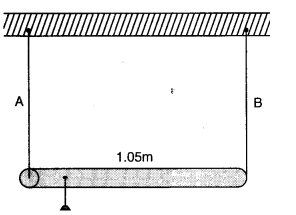
The cross-sectional areas of wires A and B are 1.0 mm2 and 2.0 mm2, respectively. At what point along the rod should a mass m be suspended in order to produce (a) equal stresses and (b) equal strains in both steel and aluminium wires.
Answer: For steel wire A, l1=l; Az = 1 mm2; Y1= 2 x 1011 Nm-2
For aluminium wire B, l2 = l; A2 = 2mm2; Y2 = 7 x 1010 Nm-2
(a) Let mass m be suspended from the rod at distance x from the end where wire A is connected. Let F1 and F2 be the tensions in two wires and there is equal stress in two wires, then
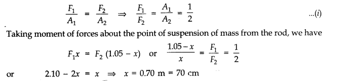
(b) Let mass m be suspended from the rod at distance x from the end where wire A is connected. Let F1 and F2 be the tension in the wires and there is equal strain in the two wires i.e.,
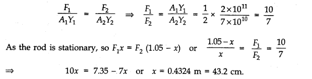
Question 9. 19. A mild steel wire of length 1.0 m and cross-sectional area 0.50 x 10-2 cm2 is stretched, well within its elastic limit, horizontally between two pillars. A mass of 100g is suspended from the mid-point of the wire. Calculate the depression at the mid-point.
Answer: Let AB be a mild steel wire of length 2L = lm and its cross-section area A = 0.50 x 10-2 cm2. A mass m = 100 g = 0.1 kg is suspended at mid-point C of wire as shown in figure. Let x be the depression at mid-point i.e., CD = x

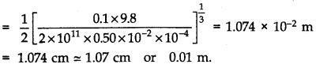
Question 9. 20. Two strips of metal are riveted together at their ends by four rivets, each of diameter 6.0 mm. What is the maximum tension that can be exerted by the riveted strip if the shearing stress on the rivet is not to exceed 6.9 x 107 Pa? Assume that each rivet is to carry one-quarter of the load.
Answer: Diameter = 6mm; Radius, r = 3 x 10-3 m;
Maximum stress = 6.9 x 107 Pa
Maximum load on a rivet
= Maximum stress x cross-sectional area
= 6.9 x 107 x 22/7 (3 x 10-3)2 N = 1952 N
Maximum tension = 4 x 1951.7 N = 7.8 x 103 N.
Question 9. 21. The Marina trench is located in the Pacific Ocean, and at one place it is nearly eleven km beneath the surface of water. The water pressure at the bottom of the trench is about 1.1 x 108 Pa. A steel ball of initial volume 0.32 m3 is dropped into the ocean and falls to the bottom of the trench. What is the change in the volume of the ball when it reaches to the bottom?
Answer:
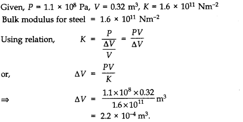
NCERT Solutions for Class 11 Physics All Chapters
- Chapter 1 Physical World
- Chapter 2 Units and Measurements
- Chapter 3 Motion in a Straight Line
- Chapter 4 Motion in a plane
- Chapter 5 Laws of motion
- Chapter 6 Work Energy and power
- Chapter 7 System of particles and Rotational Motion
- Chapter 8 Gravitation
- Chapter 9 Mechanical Properties Of Solids
- Chapter 10 Mechanical Properties Of Fluids
- Chapter 11 Thermal Properties of matter
- Chapter 12 Thermodynamics
- Chapter 13 Kinetic Theory
- Chapter 14 Oscillations
- Chapter 15 Waves
We hope the NCERT Solutions for Class 11 Physics Chapter 9 Mechanical Properties of Solids help you. If you have any query regarding NCERT Solutions for Class 11 Physics Chapter 9 Mechanical Properties of Solids, drop a comment below and we will get back to you at the earliest.